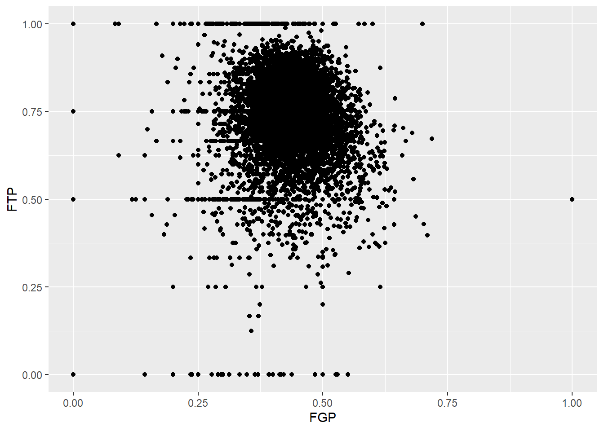
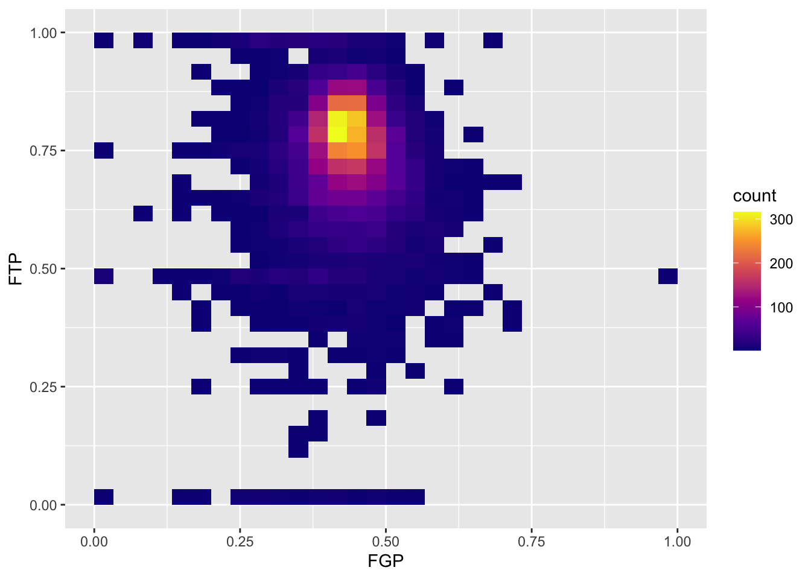

Lecture 2: Visualization and More Data Wrangling
We’re going to pick up right where we left off yesterday in Problem Set 1, where you wrote a script to create a
tbl containing several shooting statistics for NBA players between the
1996-97 season and the 2015-16 season. Your script should look something
like what is the code block below. For reasons that will become clear
shortly, we are going to call our tbl raw_shooting.
## Rows: 7447 Columns: 8
## ── Column specification ────────────────────────────────────────────────────────
## Delimiter: ","
## chr (1): PLAYER
## dbl (7): SEASON, FGM, FGA, TPM, TPA, FTM, FTA
##
## ℹ Use `spec()` to retrieve the full column specification for this data.
## ℹ Specify the column types or set `show_col_types = FALSE` to quiet this message.# Create new columns
raw_shooting <-
mutate(raw_shooting,
FGP = FGM / FGA,
TPP = TPM / TPA,
FTP = FTM / FTA,
eFGP = (FGM + 0.5 * TPM) / (FGA),
PTS = FTM + 2 * FGM + TPM,
TSP = PTS/(2 * (FGA + 0.44 * FTA)))
# Sort by the TSP in descending order
raw_shooting <- arrange(raw_shooting, desc(TSP))We will use visualization to answer some questions about the data. Specifically, we will study the distribution of the individual columns as well as try to understand the relationship between pairs of variables. For instance, is a player’s free throw percentage predictive of his three point percentage?
To produce graphics throughout this course, we will use ggplot2, which is a package contained in the tidyverse. At a very high level, ggplot2 works by layering graphics, adding different features one on top of another. You can learn much much more about ggplot2 here. We will cover some of the more advanced functionality of ggplot2 in
Histograms
As you saw in Prof. Wyner’s lectures, histograms are a powerful way to describe a single dataset.

The first bit of the code above,
ggplot(data = nba_shooting) tells R to create a coordinate
system to which can add additional layers. It also tells R that the data
to be plotted is coming from the tibble nba_shooting. The
next part of the code,
+ geom_histogram(mapping = aes(FGP), bins = 5) tells R to
add a layer to the blank plot, in this case a histogram of
field goal percentage that uses 5 bins. The first argument is the
mapping, which defines how each variable in our dataset is mapped to
visual components of the graph (the aesthetics) In the case of
a histogram, we really only need to tell R that the variable we want to
visualize goes on the horizontal (x) axis. To improve readability, we
have divided the code to produce the histogram over two lines.
It is very important when using ggplot to have the + sign at the
end of the line.
In the code above, we also told R how many bins into which to divide the data. We can vary the number of bins to get a higher-resolution view of our data. For instance, we can use 50 bins:

Instead of specifying the number of bins, which can sometimes be difficult, we could instead specify the width of the bins. For instance, we could split our data into bins of width 0.05 as follows:

It is often preferable to use a density histogram instead of a frequency histogram. This is because the areas of the density histogram boxes always sums to 1 no matter how much data you have.
## Warning: The dot-dot notation (`..density..`) was deprecated in ggplot2 3.4.0.
## ℹ Please use `after_stat(density)` instead.
## This warning is displayed once every 8 hours.
## Call `lifecycle::last_lifecycle_warnings()` to see where this warning was
## generated.
Visually, the histograms look identical but now the vertical (y) axis has a different scale.
Now you should spend time making histograms of FTP and TPP, and other variables created in code above. Discuss the differences with others.
Visualizing bivariate data
While examining one variable (i.e. column of our data table) is useful, we are often more interested in understanding the relationships between multiple variables. For instance, how do you think a player’s free throw percentage (FTP) is related to his field goal percentage (FGP)?
To make a scatterplot in R, we can run the following code. Notice that it is very similar to the code used to make histograms, but with a few important differences

Just like the code used to produce the histograms above, we began by
calling ggplot(data = nba_shooting). Now, however, instead
of calling geom_histogram() we are calling
geom_point(). This tells R that instead of a histogram, we
want to plot the data using points. We will learn much more about the
different “geom” objects available in ggplot2 in Lecture 4. Since we are
plotting multiple variables, we need to tell R to which axis each
variable is mapped. This is exactly
whatmapping = aes(x = FGP, y = FTP) does.
Immediately, we notice a few things about the figure. First, we see what appears to be a big black cloud of points in the middle of the plotting region. This is a result of R trying to plot lots and lots of data points in a small region of the plane. Additionally, we find a few rather interesting data points, corresponding to players who have never made a field goal but are perfect free throw shooters and to players who have never missed a field goal but have made only 50% of their free throws. A major drawback of this scatterplot is its inability to show the relative density of points. That is, does the point at (1.00, 0.50) correspond to a single player or does it correspond to multiple ones?
One way to address this is to use alpha-blending to change the transparency of each point. When there are many points plotted in the same region, that region will appear darker.

Now we can start to distinguish the number of players represented by each point. The fact that the point at (0.00, 0.50) is much darker than the point at (0.00, 1.00) indicates that there are more players who missed every one of their field goal attempts and made 50% of their free throws than players who missed every field goal but made every free throw.
To get an even better idea, we can make a heatmap, which you
can think of as a two-dimensional analog of a histogram. To form a
heatmap, you start by dividing the plane into lots of evenly-sized
two-dimensional bins and counting the number of datapoints within each
bin. You then color the bin according to the count. While you can
conceptually make the bins any shape you want, there are two popular
conventions: rectangular binning and hexagonal binning. For the purposes
of this course, we will focus on rectangular binning, using the
geom_bin2d() function.
ggplot(data = raw_shooting) +
geom_bin2d(aes(x = FGP, y = FTP)) +
scale_fill_viridis_c(option = "plasma", direction = 1)
We can increase the number of bins to get a much more high-resolution view of our data.
ggplot(data = raw_shooting) +
geom_bin2d(mapping = aes(x = FGP, y = FTP), bins = 100) +
scale_fill_viridis_c(option = "plasma", direction = 1)
Now we are starting to get some sense that there are some outliers in our data. We can confirm this visually in another way.

Sometimes, we don’t want to look at the entire range of the data and only want to plot a smaller window. We can do this by changing the x and y limits of the plotting region.
## Warning: Removed 5346 rows containing missing values or values outside the scale range
## (`geom_point()`).
Filtering
By this point, it should be clear that there are a number of rather curious features in our dataset. For instance, there seem to be several players who have never made a field goal but have made every one of their free throw attempts. After re-arranging our tbl according to the number of field goals made, it is clear that we have several players who have attempted fewer than 5 field goals in a single season. Before examining the relationship between a player’s field goal percentage and free throw percentage, we’d like to remove all of the players who have not attempted many of each type of shot.
The function filter() is used to pull out subsets of
observations that satisfy some logical condition like “FGA > 100” or
“FGA > 100 and FTA > 50”. To make such comparisons in R, we have
the following operators available at our disposal:
==for “equal to”!=for “not equal to”<and<=for “less than” and “less than or equal to”>and>=for “greater than” and “greater than or equal to”&,|,!for “AND” and “OR” and “NOT”
The code below filters out all of the players with at least 100 field goals in a single season.
## # A tibble: 6,295 × 14
## PLAYER SEASON FGM FGA TPM TPA FTM FTA FGP TPP FTP eFGP
## <chr> <dbl> <dbl> <dbl> <dbl> <dbl> <dbl> <dbl> <dbl> <dbl> <dbl> <dbl>
## 1 Chris Wil… 2013 110 153 0 1 39 58 0.719 0 0.672 0.719
## 2 Tyson Cha… 2012 241 355 0 2 217 315 0.679 0 0.689 0.679
## 3 Kyle Korv… 2015 292 600 221 449 106 118 0.487 0.492 0.898 0.671
## 4 Steve Nov… 2012 161 337 133 282 22 26 0.478 0.472 0.846 0.675
## 5 Chris And… 2014 177 275 3 12 120 169 0.644 0.25 0.710 0.649
## 6 Jeremy Ev… 2011 76 115 0 1 26 37 0.661 0 0.703 0.661
## 7 Carlos Ro… 2001 75 110 0 1 29 52 0.682 0 0.558 0.682
## 8 Mason Plu… 2014 199 302 0 3 122 195 0.659 0 0.626 0.659
## 9 Stephen C… 2016 805 1597 402 887 363 400 0.504 0.453 0.908 0.630
## 10 Brent Bar… 2004 215 427 114 252 91 110 0.504 0.452 0.827 0.637
## # ℹ 6,285 more rows
## # ℹ 2 more variables: PTS <dbl>, TSP <dbl>When we run this code, you’ll notice that R prints out a tbl with 6,295 rows.
We can also filter on more complicated conditions constructed using
the AND, OR, and NOT operators: &, |, and
!. For instance, to filter observations with at least 100
field goal attempts OR 50 three point attempts, we would do the
following:
## # A tibble: 6,328 × 14
## PLAYER SEASON FGM FGA TPM TPA FTM FTA FGP TPP FTP eFGP
## <chr> <dbl> <dbl> <dbl> <dbl> <dbl> <dbl> <dbl> <dbl> <dbl> <dbl> <dbl>
## 1 Chris Wil… 2013 110 153 0 1 39 58 0.719 0 0.672 0.719
## 2 Tyson Cha… 2012 241 355 0 2 217 315 0.679 0 0.689 0.679
## 3 Kyle Korv… 2015 292 600 221 449 106 118 0.487 0.492 0.898 0.671
## 4 Steve Nov… 2012 161 337 133 282 22 26 0.478 0.472 0.846 0.675
## 5 Chris And… 2014 177 275 3 12 120 169 0.644 0.25 0.710 0.649
## 6 Jeremy Ev… 2011 76 115 0 1 26 37 0.661 0 0.703 0.661
## 7 Carlos Ro… 2001 75 110 0 1 29 52 0.682 0 0.558 0.682
## 8 Brian Car… 2011 43 100 42 87 17 18 0.43 0.483 0.944 0.64
## 9 Mason Plu… 2014 199 302 0 3 122 195 0.659 0 0.626 0.659
## 10 Stephen C… 2016 805 1597 402 887 363 400 0.504 0.453 0.908 0.630
## # ℹ 6,318 more rows
## # ℹ 2 more variables: PTS <dbl>, TSP <dbl>We may combine these constraints by enclosing them in parentheses.
## # A tibble: 4,837 × 14
## PLAYER SEASON FGM FGA TPM TPA FTM FTA FGP TPP FTP eFGP
## <chr> <dbl> <dbl> <dbl> <dbl> <dbl> <dbl> <dbl> <dbl> <dbl> <dbl> <dbl>
## 1 Keith Bog… 2014 3 6 3 6 3 3 0.5 0.5 1 0.75
## 2 Kyle Korv… 2015 292 600 221 449 106 118 0.487 0.492 0.898 0.671
## 3 Aleksanda… 1997 8 16 5 7 4 5 0.5 0.714 0.8 0.656
## 4 Steve Nov… 2012 161 337 133 282 22 26 0.478 0.472 0.846 0.675
## 5 Brian Car… 2011 43 100 42 87 17 18 0.43 0.483 0.944 0.64
## 6 Stephen C… 2016 805 1597 402 887 363 400 0.504 0.453 0.908 0.630
## 7 Brent Bar… 2004 215 427 114 252 91 110 0.504 0.452 0.827 0.637
## 8 Manu Gino… 2012 150 285 52 126 88 101 0.526 0.413 0.871 0.618
## 9 Steve Kerr 1997 249 467 110 237 54 67 0.533 0.464 0.806 0.651
## 10 Brent Bar… 2007 202 425 128 287 103 117 0.475 0.446 0.880 0.626
## # ℹ 4,827 more rows
## # ℹ 2 more variables: PTS <dbl>, TSP <dbl>What if we wanted to pull out the observations corresponding to the
2015-16 and 2014-15 season? We could do something like
filter(raw_shooting, (SEASON == 2016) | (SEASON == 2015)),
which would be perfectly fine. However, what if we wanted data from
1998-99, 2011-12, and 2015-16? Typing a lot of expressions like
SEASON == ... would be rather tedious. The
%in% operator lets us avoid this tedium:
## # A tibble: 1,150 × 14
## PLAYER SEASON FGM FGA TPM TPA FTM FTA FGP TPP FTP eFGP
## <chr> <dbl> <dbl> <dbl> <dbl> <dbl> <dbl> <dbl> <dbl> <dbl> <dbl> <dbl>
## 1 Tyson Whe… 1999 1 1 1 1 1 2 1 1 0.5 1.5
## 2 Tyson Cha… 2012 241 355 0 2 217 315 0.679 0 0.689 0.679
## 3 Jorge Gut… 2016 6 11 0 2 10 11 0.545 0 0.909 0.545
## 4 Steve Nov… 2012 161 337 133 282 22 26 0.478 0.472 0.846 0.675
## 5 Sam Jacob… 1999 3 5 0 1 2 2 0.6 0 1 0.6
## 6 Stephen C… 2016 805 1597 402 887 363 400 0.504 0.453 0.908 0.630
## 7 Manu Gino… 2012 150 285 52 126 88 101 0.526 0.413 0.871 0.618
## 8 James Har… 2012 309 629 114 292 312 369 0.491 0.390 0.846 0.582
## 9 Steve Nov… 2016 8 18 7 15 1 1 0.444 0.467 1 0.639
## 10 Brad Mill… 1999 78 138 1 2 81 102 0.565 0.5 0.794 0.569
## # ℹ 1,140 more rows
## # ℹ 2 more variables: PTS <dbl>, TSP <dbl>We could also filter out data from the two lockout-shortened seasons,
1998-99 and 2011-12 using a combination of the NOT !
operator and %in%.
## # A tibble: 6,721 × 14
## PLAYER SEASON FGM FGA TPM TPA FTM FTA FGP TPP FTP eFGP
## <chr> <dbl> <dbl> <dbl> <dbl> <dbl> <dbl> <dbl> <dbl> <dbl> <dbl> <dbl>
## 1 Dajuan Wa… 2007 1 1 1 1 1 2 1 1 0.5 1.5
## 2 Amir John… 2006 7 10 2 3 4 4 0.7 0.667 1 0.8
## 3 Keith Bog… 2014 3 6 3 6 3 3 0.5 0.5 1 0.75
## 4 Steve Nov… 2011 35 67 26 46 8 8 0.522 0.565 1 0.716
## 5 Chris Cra… 2003 8 13 1 3 7 8 0.615 0.333 0.875 0.654
## 6 Chris Wil… 2013 110 153 0 1 39 58 0.719 0 0.672 0.719
## 7 Maceo Bas… 2007 49 76 3 7 37 47 0.645 0.429 0.787 0.664
## 8 Kyle Korv… 2015 292 600 221 449 106 118 0.487 0.492 0.898 0.671
## 9 Jorge Gut… 2016 6 11 0 2 10 11 0.545 0 0.909 0.545
## 10 Aleksanda… 1997 8 16 5 7 4 5 0.5 0.714 0.8 0.656
## # ℹ 6,711 more rows
## # ℹ 2 more variables: PTS <dbl>, TSP <dbl>For the remainder of this module, we will focus on the players who attempted at least 100 field goals, 100 free throws, 50 three pointers in the non-lockout seasons.
nba_shooting <-
filter(raw_shooting,
(FGA >= 100 &
FTA >= 100 &
TPA >= 50 &
!SEASON %in% c(1999, 2012)))
nba_shooting## # A tibble: 2,254 × 14
## PLAYER SEASON FGM FGA TPM TPA FTM FTA FGP TPP FTP eFGP
## <chr> <dbl> <dbl> <dbl> <dbl> <dbl> <dbl> <dbl> <dbl> <dbl> <dbl> <dbl>
## 1 Kyle Korv… 2015 292 600 221 449 106 118 0.487 0.492 0.898 0.671
## 2 Stephen C… 2016 805 1597 402 887 363 400 0.504 0.453 0.908 0.630
## 3 Brent Bar… 2004 215 427 114 252 91 110 0.504 0.452 0.827 0.637
## 4 Brent Bar… 2007 202 425 128 287 103 117 0.475 0.446 0.880 0.626
## 5 Fred Hoib… 2005 139 284 70 145 89 102 0.489 0.483 0.873 0.613
## 6 Mario Elie 1997 291 585 120 286 207 231 0.497 0.420 0.896 0.6
## 7 Brent Bar… 2001 198 401 109 229 84 103 0.494 0.476 0.816 0.630
## 8 John Stoc… 1997 416 759 76 180 275 325 0.548 0.422 0.846 0.598
## 9 Steve Nash 2007 517 971 156 343 222 247 0.532 0.455 0.899 0.613
## 10 Brent Bar… 2002 401 790 164 387 198 234 0.508 0.424 0.846 0.611
## # ℹ 2,244 more rows
## # ℹ 2 more variables: PTS <dbl>, TSP <dbl>Creating Categorical Variables
So far, we have used mutate() to compute numeric or
continuous variables. Often in an analysis, however, we may want to
bin these values into smaller buckets or categories. For
instance, we may rather arbitrarily classify players based on their
three-point shooting prowess as follows:
- Hopeless: TPP < 20%
- Below Average: 20% <= TPP < 30%
- Average: 30% <= TPP < 35%
- Above Average: 35% < TPP < 40%
- Elite: TPP > 40%
In order to add a column to nba_shooting that includes
these classifications, we can use the case_when()
function.
nba_shooting <- mutate(nba_shooting,
Classification = case_when(
TPP < 0.2 ~ "Hopeless",
0.2 <= TPP & TPP < 0.3 ~ "Below Average",
0.3 <= TPP & TPP < 0.35 ~ "Average",
0.35 <= TPP & TPP < 0.4 ~ "Above Average",
0.4 <= TPP ~ "Elite"))Let’s take a minute to unpack the code above. Within
mutate(), we have started like we always did, with the name
of the new variable on the left hand side of an equal sign. Then we
called the case_when() function. Within this function, we
have a new line for each of the values of the new variable
“Classification”. On each line we have an expression with a tilde
(~). On the left of the ~, we have put a
logical expression and on the right we have written the value of
“Clasification.”
Selecting Columns
Oftentimes, the dataset you load into R contains many, many more
columns than you need. We can use select() to pull out the
columns we want to use in our subsequent analyses. For instance, we may
want to only focus on the columns SEASON, FGP, TPP, FTP, eFGP, PTS, and
TSP and ignore the rest of the columns.
## # A tibble: 2,254 × 8
## PLAYER SEASON FGP TPP FTP eFGP PTS TSP
## <chr> <dbl> <dbl> <dbl> <dbl> <dbl> <dbl> <dbl>
## 1 Kyle Korver 2015 0.487 0.492 0.898 0.671 911 0.699
## 2 Stephen Curry 2016 0.504 0.453 0.908 0.630 2375 0.670
## 3 Brent Barry 2004 0.504 0.452 0.827 0.637 635 0.668
## 4 Brent Barry 2007 0.475 0.446 0.880 0.626 635 0.666
## 5 Fred Hoiberg 2005 0.489 0.483 0.873 0.613 437 0.664
## 6 Mario Elie 1997 0.497 0.420 0.896 0.6 909 0.662
## 7 Brent Barry 2001 0.494 0.476 0.816 0.630 589 0.660
## 8 John Stockton 1997 0.548 0.422 0.846 0.598 1183 0.656
## 9 Steve Nash 2007 0.532 0.455 0.899 0.613 1412 0.654
## 10 Brent Barry 2002 0.508 0.424 0.846 0.611 1164 0.652
## # ℹ 2,244 more rowsSummarizing Individual Columns
Among eligible players, what was the average field goal percentage in
the 2015-16 season? To answer this, we can use filter() to
create a new tbl containing the data only for this season. Then we can
use the dplyr verb reframe() as follows:
nba_shooting_2016 <- filter(nba_shooting, SEASON == 2016)
reframe(nba_shooting_2016, FGP = mean(FGP))## # A tibble: 1 × 1
## FGP
## <dbl>
## 1 0.438## # A tibble: 1 × 3
## FGP TPP FTP
## <dbl> <dbl> <dbl>
## 1 0.438 0.346 0.790In the first line, we compute the average field goal percentage and in the second example, we compute the average field goal, three point, and free throw percentages. Of course, we are not limited to computing just the mean. The following functions are quite useful for summarizing several aspects of the distribution of the variables in our dataset:
- Center:
mean(),median() - Spread:
sd(),IQR() - Range:
min(),max() - Count:
n(),n_distinct()
We will have much more to say about reframe() in Lecture 3 when we discuss grouped
manipulations.
Saving our work
By this point, the nba_shooting tbl has much more
information in it than the original data file we read in. While we can
always re-run the commands used to produce this tbl from our script,
when data analyses become more complicated, it is helpful to save these
objects. R has its own special file format for efficiently saving data
on your computer.
We will use the save() command.
When we want to load the data back into R, we can use the
load() function
Thinking Ahead for Tomorrow
Up to this point, we have only used the dplyr verbs
mutate(), filter(), and arrange()
one at a time. What if we wanted to do something a bit more complicated
like:
- Remove players from the lockout season who had fewer than 100 field goal attempts, fewer than 100 free throw attempts, or fewer than 50 three point attempts
- Arrange them according to their three point percentage.
- Add a classification of their three point shooting ability (as we
did above with
case_when()) - Compute the mean field goal percentage of all of the players within each of these categories. That is, separately compute the mean field goal percentage of the “Elite” three point shooters, the “Above Average” three point shooters, etc.
In Lecture 3, we will learn how to string together several dplyr verbs to perform the above tasks. We will also learn how to perform grouped calculations.